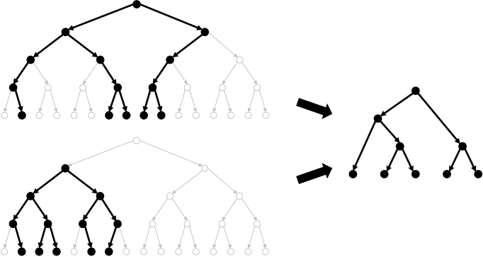

|
I am a Senior Scientist at NTT Research in the Cryptography & Information Security Lab.
My primary research focus is cryptography, though I am broadly interested in all aspects of
computer science theory. Previously, I was an Assistant Professor at
Princeton University, before going on leave to help
launch NTT's new industry research lab in California and ultimately making the move permanent. I completed a postdoc at MIT, my PhD at Stanford University and my bachelor's degree with Highest Honors at UC Berkeley. I am a recipient of the NSF CAREER Award and the Sloan Fellowship, as well as three Best Paper Awards, given every year to the top paper at each of the flagship cryptography conferences. Email:  |
 |
Research Interests
 | Bounded Storage Model Cryptography typically models adversaries as time-bounded, but what about adversaries that are space-bounded? The space-bounded model allows for unconditional and everlasting protocols, sometimes far simpler than their time-bounded counterparts. If we bound time and space, we can also achieve never-before-possible functionalities, such as ciphertexts that effectively disappear after transmission. |
 | Crypto Math Intractible mathematical problems are the heart of modern cryptography. Unfortunately, until someone proves that P≠NP, the intractability of such problems cannot be proven unconditionally and can only be conjectured. Then how do we discover novel mathematical structures, figure out how to use them, and gain confidence in their security? Through extensive study, devising new applications, attacks, and mitigations. |
 | Idealized Models Many of the most practical cryptosystems lack a full security proof in the standard model. Nevertheless, we can gain confidence in their security by heuristically treating one or more of the building blocks as an "ideal" object implemented as an oracle. Prominent examples include random oracles, ideal ciphers, generic groups, etc. Proofs in idealized models are often very different from standard crypto proofs, requiring both reductions and query complexity arguments. |
 | Obfuscation Can you hide secrets in software code? Program obfuscation aims to do exactly that. In addition to direct applications such as protecting intellectual property in software, obfuscation also has numerous applications in cryptography. In fact, it is now widely considered to be "Crypto Complete." Yet numerous quesitons still remain: can obfuscation be made practical? Can it be based on "standard" computational assumptions? |
|  | Property Preserving Encryption Property Preserving Encryption (PPE) deliberately preserves certain relations on the plaintext data (e.g. equalities in the case of deterministic encryption, or order in the case of order revealing encryption). In addition to applications such as encrypted databases, PPE also has other interesting connections, such as security under bad randomness and differential privacy. The question is then: how to reveal such information without revealing other sensitive data, and what security, if any, remains. |
 | Quantum Quantum computers harnesses the strange features of quantum mechanics, such as superpositions, entanglement, etc. Post-Quantum Cryptography aims to secure cryptosystems against the enhanced power of such computers. On the other hand, Quantum Cryptography uses quantum computing to achieve never-before-possible cryptographic functionalities, such as programs that cannot be copied. |
 | Traitor Tracing Traitor tracing systems seek to deter piracy by enabling content distributors to identify the origin of pirate decryption boxes. The "usual" goal in traitor tracing is to achieve the shortest ciphertexts, secret keys, and public keys possible. But there is also a rich set of questions beyond parameter sizes: how to embed arbitrary information into a secret key? How to keep honest users' information private, while exposing traitors'? What happens when the decoder uses a quantum computer? |
Advising
Postdoc → Scientist at NTT Research
→ Asst Prof at Boston University
PhD
→ Hudson River Trading
→ Postdoc at UC Berkeley
→ Faculty Fellow at NYU
Masters
→ PhD at UC Berkeley
→ PhD at UC Berkeley
Intern
Program Committees
CFail 2023TCC 2023
FOCS 2023
PKC 2023
QCW 2022
CFail 2022
TCC 2022
EUROCRYPT 2022
PKC 2022
TCC 2021
ITCS 2021
ASIACRYPT 2020
ITC 2020
ASIACRYPT 2019
CRYPTO 2018
TCC 2017
EUROCRYPT 2017
ICITS 2016
ICITS 2015